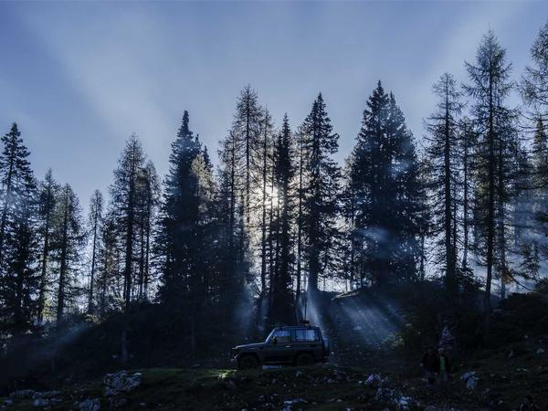

曾服务品牌
关于我
我是陈逸飞，一名专注于视觉叙事的视频剪辑师。从2016年入行至今，我始终相信——好的剪辑不仅仅是技术的堆砌，更是对节奏、情感和观众心理的精准把控。
我曾在北京多家顶级影视制作公司担任高级剪辑师，参与过品牌TVC、纪录片、微电影、综艺后期等多种类型的视频制作。擅长将复杂的素材梳理为流畅、有冲击力的视觉故事。
目前以自由职业者身份与各大品牌及制作团队深度合作，同时也在B站和小红书分享剪辑教程，积累超过30万粉丝。
精选作品集
每一个项目都是一次全新的叙事挑战，以下是我最引以为傲的作品

专业技能
从创意构思到最终交付，掌握完整视频制作链路
剪辑与叙事
调色与视觉
特效与动效
工作流与项目管理
常用工具
工作经历
从制作助理到独立剪辑师，每一步都在打磨手艺
独立视频剪辑师
自由职业
以自由职业者身份服务NIKE、华为、OPPO等头部品牌，同时运营个人自媒体账号（B站30万粉、小红书15万粉），承接品牌TVC、纪录片、短视频等全类型项目。
高级剪辑师
北京光年映像文化传媒
负责公司核心项目的剪辑与调色工作，主导完成华为、腾讯等品牌广告项目20余个。搭建公司标准化后期工作流，将项目交付效率提升40%。
剪辑师
北京新片场影业
参与微电影、网剧和品牌片剪辑，独立完成《极境》纪录片剪辑（入围翠贝卡电影节）。在此期间系统学习了DaVinci Resolve调色体系。
后期制作助理
北京央视纪录频道
在央视纪录频道实习并转正，参与《航拍中国》《舌尖上的中国》等节目的辅助剪辑工作，打下了扎实的纪录片剪辑基础。
客户评价
合作过的客户怎么说
"逸飞对节奏的感知力是我合作过的剪辑师中最出色的。他把我们原本平淡的素材剪出了一部大片的感觉，最终成片超出了所有人的预期。"
"和逸飞合作纪录片《极境》是一段非常愉快的经历。他对素材的梳理能力极强，能在海量素材中精准找到最有张力的片段。影片入围翠贝卡，他功不可没。"
"我们的美食短视频系列在逸飞接手后，完播率直接翻了一倍。他太懂短视频的节奏了，每个镜头的停留时间都恰到好处。已经连续合作两年了。"
荣誉与认可
金投奖
最佳商业广告剪辑 · 2023
翠贝卡电影节
纪录片单元入围 · 2021
B站创作之星
年度最佳知识区UP主 · 2023
中国广告节
银奖 · 短视频类 · 2022
开始合作
无论你是品牌方、制作公司还是独立创作者，如果你需要一个能把素材变成好故事的剪辑师，欢迎随时联系我。